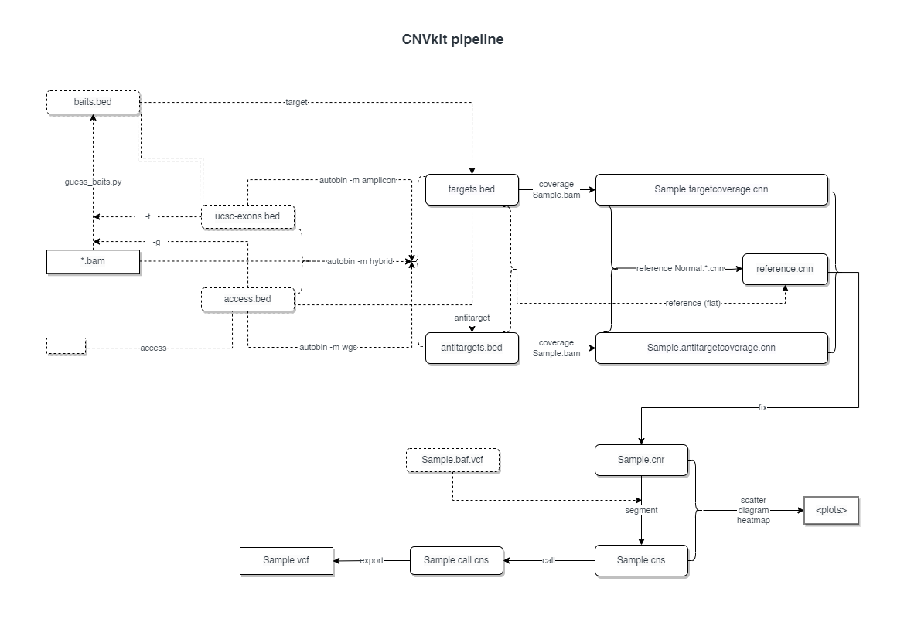

CNVkit pipeline
The pipeline decouples cnvkit.py batch so that we get detailed control over each step.
Pipeline overview
The pipeline consists of the following steps:
cnvkit.py accessto generate a BED file of accessible regions if not given- Guess baits from bam files if baitfile is not given
cnvkit.py autobinto generate target and antitarget filescnvkit.py coverageto generate coverage files for target regioncnvkit.py coverageto generate coverage files for antitarget regioncnvkit.py referenceto generate a reference.cnn file using normal samples (or a "flat" reference file if no normal samples are given)cnvkit.py fixto combine the uncorrected target and antitarget coverage tables (.cnn) and correct for biases in regional coverage and GC content, according to the given reference.cnvkit.py segmentto infer discrete copy number segments from the given coverage table:cnvkit.py callto call copy number alterations from the given segments filecnvkit.py scatterto generate scatter plots of log2 ratioscnvkit.py diagramto generate a diagram of copy number alterations on all chromosomescnvkit.py heatmapto generate a heatmap of segment-level log2 ratioscnvkit.py heatmapto generate a heatmap of bin-level log2 ratios
See also the flowchart below:

Input files
metafile: a tab-separated file (see the next section) containing sample informationbaitfile: Potentially targeted genomic regions. E.g. all possible exons for the reference genome. This is optional whenmethodiswgs.accfile: The accessible genomic regions. If not given, usecnvkit.py accessto generate one. You can control the details by configuration items[CNVkitAccess.envs]
Configurations
Special configurations
access_excludes: File(s) with regions to be excluded forcnvkit.py access.guessbaits_guided: Whether to use guided mode for guessing baits.metacols: The column names for each type of information in metafilegroup: The column name in the metafile that indicates the sample group Default:Grouppurity: The column name in the metafile that indicates the sample purity. Default:Puritysnpvcf: The column name in the metafile that indicates the path to the SNP VCF file. Default:SnpVcfbam: The column name in the metafile that indicates the path to the BAM file. Default:Bamvcf_sample_id: The column name in the metafile that indicates the sample ID in the VCF file. Default:VcfSampleIdvcf_normal_id: The column name in the metafile that indicates the normal sample ID in the VCF file. Default:VcfNormalIdsex: The column name in the metafile that indicates the sample sex. Default:Sexguess_baits: The column name in the metafile that indicates whether to guess the bait file from the bam files. Default:GuessBaitsguessbaits: Guess the bait file from the bam files, either guided or unguided. IfFalse,baitfileis used. Otherwise, ifbaitfileis given, use it (guided), otherwise useaccfile(unguided). The bam files withmetacols.guess_baitscolumn set toTrue,TRUE,true,1,Yes,YES, oryeswill be used to guess the bait file.case: The group name of samples inmetacols.groupto call CNVs for. If not specified, use all samples. In such a case,controlmust not be specified, as we are using a flat reference.control: The group name of samples inmetacols.groupto use as reference if not specified, use a flat reference.
Global configurations
The options that are used by multiple processes (can be overriden individually by [<proc>.envs.xxx]):
cnvkit: the path to thecnvkit.pyexecutable, defaults toconfig.exe.cnvkitfrom./.biopipen.tomlor~/.biopipen.toml.rscript: Path to the Rscript excecutable to use for running R code. RequiresDNAcopyto be installed in R, defaults toconfig.lang.rscriptsamtools: Path to samtools, used for guessing bait file.convert: Linuxconvertcommand to convert pdf to png So that they can be embedded in the HTML report.ncores: number of cores to use, defaults toconfig.misc.ncoresreffa: the reference genome (e.g. hg19.fa), defaults toconfig.ref.reffaUsed byCNVkitAccess,CNVkitAutobinandCNVkitReferenceannotate: Use gene models from this file to assign names to the target regions. Format: UCSC refFlat.txt or ensFlat.txt file (preferred), or BED, interval list, GFF, or similar. Defaults toconfig.ref.refflatshort_names: Reduce multi-accession bait labels to be short and consistentmethod: Sequencing protocol: hybridization capture ('hybrid'), targeted amplicon sequencing ('amplicon'), or whole genome sequencing ('wgs'). Determines whether and how to use antitarget bins.male_reference: Use or assume a male reference (i.e. female samples will have +1 log-CNR of chrX; otherwise male samples would have -1 chrX). Used byCNVkitReference,CNVkitCall,CNVkitHeatmapCnsandCNVkitHeatmapCnr.drop_low_coverage: Drop very-low-coverage bins before segmentation to avoid false-positive deletions in poor-quality tumor samples. Used byCNVkitSegmentandCNVkitCallno_gc: Skip GC correction forcnvkit.py reference/fix.no_edge: Skip edge-effect correction forcnvkit.py reference/fix.no_rmask: Skip RepeatMasker correction forcnvkit.py reference/fix. no_* options are used byCNVkitReferenceandCNVkitFixmin_variant_depth: Minimum read depth for a SNV to be displayed in the b-allele frequency plot. Used byCNVkitSegmentandCNVkitCallzygosity_freq: Ignore VCF's genotypes (GT field) and instead infer zygosity from allele frequencies. Used byCNVkitSegmentandCNVkitCall
Process-specific configurations
The options that are used by a single process. See the process-specific documentation for details. You can configure them by [<proc>.envs.xxx] in the config file.
CNVkitAccessCNVkitGuessBaitsCNVkitAutobinCNVkitCoverageTargetCNVkitCoverageAntitargetCNVkitReferenceCNVkitFixCNVkitSegmentCNVkitScatterCNVkitDiagramCNVkitHeatmapCnsCNVkitHeatmapCnrCNVkitHeatmapCall
The metafile
A metafile should be with the following columns:
- Sample: The sample_id used for target/antitarget files. If not provided,
the sample_id will be the first part of basename of the bam file.
For exapmle:
D123.tumor.bam -> D123 <bam>: The path to the bam file, better using absolute path.<group>: The type of the sample, defining the tumor/normal samples.<sex>: Guess each sample from coverage of X and Y chromosomes if not given.<purity>: Estimated tumor cell fraction, a.k.a. purity or cellularity.<snpvcf>: file name containing variants for segmentation by allele frequencies.<vcf_sample_id>: Sample ID in the VCF file.<vcf_normal_id>: Normal sample ID in the VCF file.<guess_baits>: Guess the bait file from the bam file